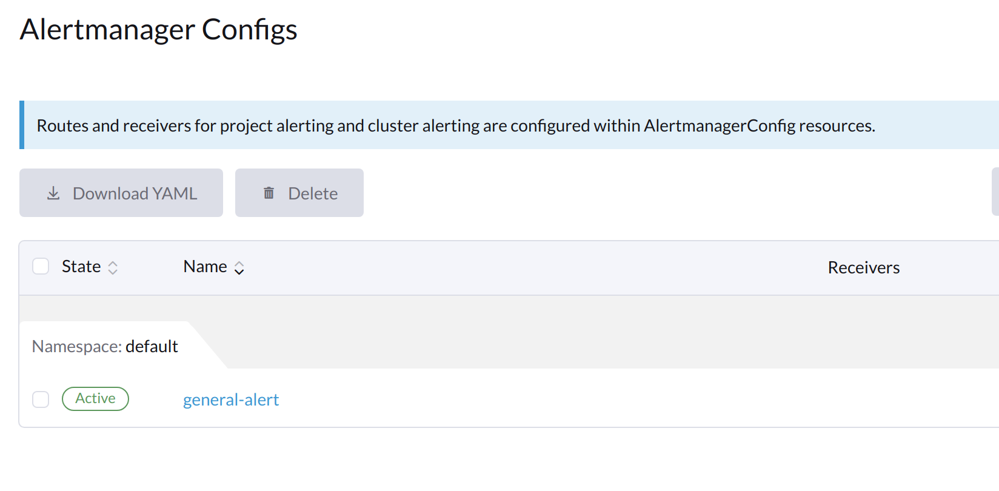
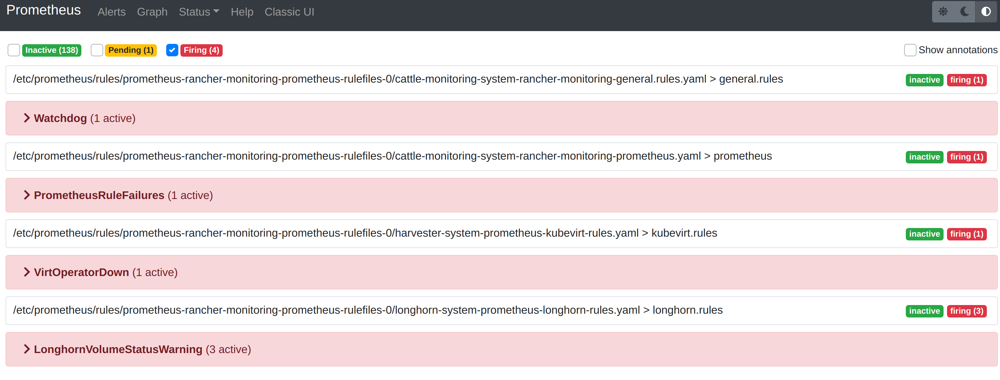

|
Este documento ha sido traducido utilizando tecnología de traducción automática. Si bien nos esforzamos por proporcionar traducciones precisas, no ofrecemos garantías sobre la integridad, precisión o confiabilidad del contenido traducido. En caso de discrepancia, la versión original en inglés prevalecerá y constituirá el texto autorizado. |
Monitorización
La función de monitorización ahora está implementada con un complemento y está desactivada por defecto en nuevas instalaciones.
Puedes habilitar y deshabilitar el rancher-monitoring complemento después de la instalación utilizando la SUSE Virtualization interfaz de usuario o el archivo de configuración.
Métricas del panel de control
SUSE Virtualization ha proporcionado una integración de monitorización integrada utilizando Prometheus. La monitorización se habilita automáticamente durante la instalación.
Desde la página Dashboard, los usuarios pueden ver las métricas del clúster y las 10 métricas de VM más utilizadas respectivamente.
Además, los usuarios pueden hacer clic en el enlace del panel de Grafana para ver más paneles en la interfaz de Grafana.

|
Solo los usuarios administradores pueden ver las métricas del panel de control del clúster. Además, Grafana es proporcionado por Referencia: values.yaml |
Métricas de detalle de VM
Para las VMs, puedes ver las métricas de VM haciendo clic en el VM details page > VM Metrics.

|
El |
Por ejemplo, en un sistema operativo Linux, el comando free -h muestra las estadísticas de memoria actuales de la siguiente manera
$ free -h
total used free shared buff/cache available
Mem: 7.7Gi 166Mi 4.6Gi 1.0Mi 2.9Gi 7.2Gi
Swap: 0B 0B 0B
El Memory Usage correspondiente es (1 - 4.6/7.7) * 100%, aproximadamente 40%.
Estado y métricas de migración en vivo
La migración en vivo es una característica crítica para garantizar el tiempo de funcionamiento de la carga de trabajo. Puedes monitorizar el progreso de la migración en vivo de la máquina virtual directamente desde la interfaz de Harvester a través del rancher-monitoring complemento.
-
Habilita el rancher-monitoring complemento.
-
Ve a Máquinas Virtuales.
-
Localiza la máquina virtual en la lista y luego haz clic en su nombre para ver sus detalles.
-
Ve a la pestaña Migración.
La pestaña Migración se divide en las siguientes secciones:
-
Información general: Esta sección muestra la fase de migración actual, los nodos de origen y destino, y las horas de inicio y fin de la migración.
-
Métricas en tiempo real: Estas métricas son generadas por Prometheus y se retienen durante cinco días.
Métrica Descripción Bytes de datos de migración restantes
Cantidad de datos del sistema operativo invitado que no han sido migrados
Bytes de datos de migración procesados
Cantidad de datos del sistema operativo invitado que ya han sido migrados
Tasa de transferencia de memoria de migración
Tasa a la que se transfiere la memoria
Tasa de memoria sucia de migración
Tasa a la que se cambian los datos dentro de la memoria del invitado pero no se sincronizan con los datos en disco
Si el valor de Bytes de datos de migración restantes disminuye constantemente a medida que el valor de Bytes de datos de migración procesados aumenta, los datos se están migrando con éxito al destino.
Si el valor de Bytes de datos de migración restantes fluctúa mientras que la Tasa de memoria sucia de migración se mantiene muy alta, la máquina virtual está bajo una carga significativa. En algunos casos, esto puede impedir que la migración se complete.
-
Eventos de migración: Estos registros de eventos específicos de la máquina virtual son generados por el servidor API de Kubernetes (kube-apiserver) y se retienen durante una hora.
Cómo configurar los ajustes de monitorización
La monitorización tiene varios componentes que ayudan a recopilar y agregar datos métricos de todos los Nodos/Pods/VMs. Los recursos requeridos para la monitorización dependen de tus cargas de trabajo y recursos de hardware. SUSE Virtualization establece valores predeterminados basados en casos de uso generales, y puedes cambiarlos en consecuencia.
Actualmente, Resources Settings se puede configurar para los siguientes componentes:
-
Prometheus
-
Prometheus Node Exporter
Desde la interfaz de usuario
En la página Avanzado, puedes ver y cambiar la configuración de recursos de la siguiente manera:
-
Ve a la página Avanzado > Complementos y selecciona la página rancher-monitoring.
-
Desde la pestaña Prometheus, cambia las solicitudes y límites de recursos.
-
Selecciona Guardar cuando termines de configurar los ajustes para el complemento rancher-monitoring. Las ampliaciones de Monitoreo se reinician en unos pocos segundos. Ten en cuenta que el reinicio puede tardar en recargar los datos anteriores.

|
La configuración de la interfaz de usuario solo es visible cuando el complemento rancher-monitoring está habilitado. |
La opción más utilizada es la configuración de memoria:
-
El
Requested Memoryes la memoria mínima requerida por el recursoMonitoring. El valor recomendado es de aproximadamente el 5% al 10% de la memoria del sistema de un único nodo de gestión. Un valor inferior a 500Mi será denegado. -
El
Memory Limites la memoria máxima que se puede asignar a un recursoMonitoring. El valor recomendado es de aproximadamente el 30% de la memoria del sistema para un único nodo de gestión. Cuando elMonitoringalcanza este umbral, se reiniciará automáticamente.
Dependiendo de los recursos de hardware disponibles y las cargas del sistema, puedes cambiar la configuración anterior en consecuencia.
|
Si tienes múltiples nodos de gestión con diferentes recursos de hardware, establece el valor de Prometheus en función del más pequeño. |
|
Cuando un número creciente de VMs se despliega en un nodo, el pod |
Desde la CLI
Puedes usar el siguiente comando kubectl para cambiar las configuraciones de recursos para el complemento rancher-monitoring: kubectl edit addons.harvesterhci.io -n cattle-monitoring-system rancher-monitoring.
La ruta de recursos y los valores predeterminados son los siguientes:
apiVersion: harvesterhci.io/v1beta1
kind: Addon
metadata:
name: rancher-monitoring
namespace: cattle-monitoring-system
spec:
valuesContent: |
prometheus:
prometheusSpec:
resources:
limits:
cpu: 1000m
memory: 2500Mi
requests:
cpu: 850m
memory: 1750Mi
|
Aún puedes hacer ajustes de configuración cuando el complemento está deshabilitado. Sin embargo, estos cambios solo tienen efecto cuando vuelves a habilitar el complemento. |
Alertmanager
SUSE Virtualization utiliza Alertmanager para recopilar y gestionar todas las alertas que ocurrieron/están ocurriendo en el clúster.
Configuración de Alertmanager
Habilitar/Deshabilitar Alertmanager
Alertmanager está habilitado por defecto. Puedes deshabilitarlo desde la siguiente ruta de configuración.

Cambiar Configuración de Recursos
También puedes cambiar la configuración de recursos de Alertmanager como se muestra en la imagen anterior.
Configurar AlertmanagerConfig desde WebUI
Para enviar las alertas a servidores de terceros, configura AlertmanagerConfig.
-
En la interfaz de usuario, ve a Monitoreo y Registro → Monitoreo → Configuraciones de Alertmanager.
-
En la * Configuración de Alertmanager: Crea * pantalla, especifica un espacio de nombres y un nombre, y luego haz clic en Crear.

-
Haz clic en el nombre de la configuración que acabas de crear.

-
Haz clic en Añadir Receptor.

-
Especifica un nombre para el receptor y luego selecciona un tipo de receptor.

-
Configura los ajustes requeridos y luego haz clic en Crear.

Para configurar Microsoft Teams o webhooks de SMS, primero instala la aplicación rancher-alerting-drivers utilizando los siguientes comandos:
helm repo add rancher-charts https://charts.rancher.io/
helm repo update
helm install rancher-charts/rancher-alerting-drivers \
--set sachet.enabled=false \ # Set to true if you want to use SMS Webhook
--set prom2teams.enabled=true \ # Set to true if you want to use MS Teams Webhook
--namespace cattle-monitoring-system \
--generate-namePara instrucciones de configuración detalladas, consulta Configuración del Receptor en la documentación de Rancher.
Si tu entorno no tiene acceso directo a Internet (entorno aislado), debes descargar manualmente el gráfico de Helm y las imágenes de contenedor relacionadas, y luego subirlas al clúster SUSE Virtualization.
-
Descarga el gráfico de Helm de rancher-alerting-drivers y empaquétalo.
helm pull rancher-charts/rancher-alerting-drivers --version <VERSION>
-
Descarga las imágenes requeridas.
docker save -o sachet.tar rancher/mirrored-messagebird-sachet:<VERSION> docker save -o prom2teams.tar rancher/mirrored-idealista-prom2teams:<VERSION>
-
Sube el gráfico y las imágenes al clúster SUSE Virtualization.
-
Carga las imágenes en todos los nodos SUSE Virtualization.
docker load -i sachet.tar docker load -i prom2teams.tar
-
Instala rancher-alerting-drivers en el clúster SUSE Virtualization.
|
SUSE Virtualization no gestiona las actualizaciones de la aplicación |
Configura AlertmanagerConfig desde la CLI
También puedes añadir AlertmanagerConfig desde la CLI.
Ejemplo: un receptor Webhook en el espacio de nombres default.
cat << EOF > a-single-receiver.yaml
apiVersion: monitoring.coreos.com/v1alpha1
kind: AlertmanagerConfig
metadata:
name: amc-example
# namespace: your value
labels:
alertmanagerConfig: example
spec:
route:
continue: true
groupBy:
- cluster
- alertname
receiver: "amc-webhook-receiver"
receivers:
- name: "amc-webhook-receiver"
webhookConfigs:
- sendResolved: true
url: "http://192.168.122.159:8090/"
EOF
# kubectl apply -f a-single-receiver.yaml
alertmanagerconfig.monitoring.coreos.com/amc-example created
# kubectl get alertmanagerconfig -A
NAMESPACE NAME AGE
default amc-example 27s
Ejemplo de una Alerta Recibida por Webhook
Las alertas enviadas al servidor webhook estarán en el siguiente formato:
{
'receiver': 'longhorn-system-amc-example-amc-webhook-receiver',
'status': 'firing',
'alerts': [],
'groupLabels': {},
'commonLabels': {'alertname': 'LonghornVolumeStatusWarning', 'container': 'longhorn-manager', 'endpoint': 'manager', 'instance': '10.52.0.83:9500', 'issue': 'Longhorn volume is Degraded.',
'job': 'longhorn-backend', 'namespace': 'longhorn-system', 'node': 'harv2', 'pod': 'longhorn-manager-r5bgm', 'prometheus': 'cattle-monitoring-system/rancher-monitoring-prometheus',
'service': 'longhorn-backend', 'severity': 'warning'},
'commonAnnotations': {'description': 'Longhorn volume is Degraded for more than 5 minutes.', 'runbook_url': 'https://longhorn.io/docs/1.3.0/monitoring/metrics/',
'summary': 'Longhorn volume is Degraded'},
'externalURL': 'https://192.168.122.200/api/v1/namespaces/cattle-monitoring-system/services/http:rancher-monitoring-alertmanager:9093/proxy',
'version': '4',
'groupKey': '{}/{namespace="longhorn-system"}:{}',
'truncatedAlerts': 0
}
|
Diferentes receptores pueden presentar las alertas en diferentes formatos. Para más detalles, por favor consulta los documentos relacionados. |
Limitación conocida
El AlertmanagerConfig es impuesto por el namespace. No se admite AlertmanagerConfig a nivel global sin un espacio de nombres.
Ya hemos creado un informe de GitHub para rastrear los cambios en upstream. Una vez que la función esté disponible, SUSE Virtualization la adoptará.
Ver y gestionar alertas
Desde el panel de Alertmanager
Puedes visitar el panel original de Alertmanager desde el siguiente enlace. Ten en cuenta que necesitas reemplazar the-cluster-vip con el cluster-vip real:
La vista general del panel de Alertmanager es la siguiente.

Puedes ver los detalles de una alerta:

Desde el panel de Prometheus
Puedes visitar el panel original de Prometheus desde el siguiente enlace. Ten en cuenta que necesitas reemplazar the-cluster-vip con el cluster-vip real:
El menú Alerts en la barra de navegación superior muestra todas las reglas definidas en Prometheus. Puedes usar los filtros Inactive, Pending y Firing para encontrar rápidamente la información que necesitas.

Solución de problemas
Para soporte de monitorización y resolución de problemas, por favor consulta la página de resolución de problemas.